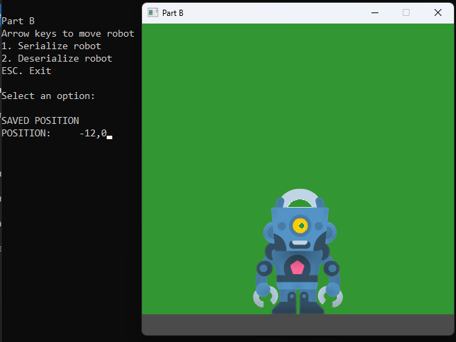
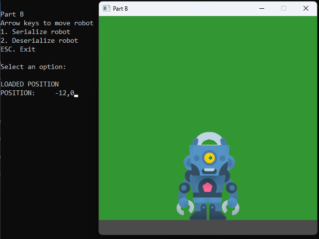

📘 Day 11 Lecture Practices
💻 Serializing Classes
🧩 Part B-1.1: SerializeCSV declaration
- Open the
Player.hfile. - Add a declaration for a
SerializeCSVmethod to the Player class.- Parameters: ofstream for the out file, char for the delimiter.
Remember to consider how parameters should be passed and whether the parameters and method should be const.
🧩 Part B-1.2: SerializeCSV definition
- Open the
Player.cppfile. - Add a definition for a
SerializeCSVmethod to the Player class.- Write out the player's
worldXandworldY. - Be sure to separate them by the delimiter.
- Write out the player's
🧩 Part B-1.3: SavePosition method
- Open the
Day11.cppfile. - Add code to the
SavePositionmethod.- Open the file for output.
- If the file is open...
- Serialize the player object.
- Print to the console "SAVED POSITION".
- Else print an error message.
- Close the file.
🎯 Result

💻 Deserializing Classes
🧩 Part B-2.1: DeserializeCSV declaration
- Open the
Player.hfile. - Add a declaration for a
DeserializeCSVmethod to the Player class.- Parameters: csvLine for the line of data, char for the delimiter.
Remember to consider how parameters should be passed and whether the parameters and method should be const.
🧩 Part B-2.2: DeserializeCSV definition
- Open the
Player.cppfile. - Add a definition for a
DeserializeCSVmethod to the Player class.- Use
getlineto parse the csv line parameter. - The first value on the line is the
worldX. - The second value on the line is the
worldY. - Be sure to parse using the delimiter.
- Use
🧩 Part B-2.3: Player Constructor
- Open the
Player.hfile. - Add a Player
constructorthat calls theDeserializeCSVmethod.
🧩 Part B-2.4: LoadPosition method
- Open the
Day11.cppfile. - Add code to the
LoadPositionmethod.- Open the file for input.
- If the file is open...
- Read the line from the file.
- Call the
DeserializeCSVmethod of the player object. - Print to the console "LOADED POSITION".
- Else print an error message.
- Close the file.
🎯 Result


🧠 Lecture Practices
Here are the lecture Practices...
🔍 Lecture Quizzes
Here are the lecture quizzes...